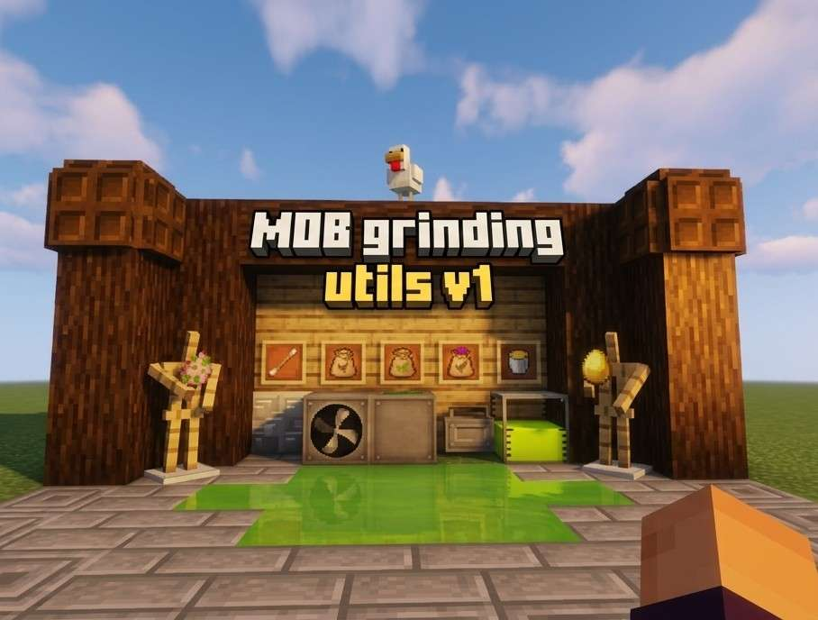
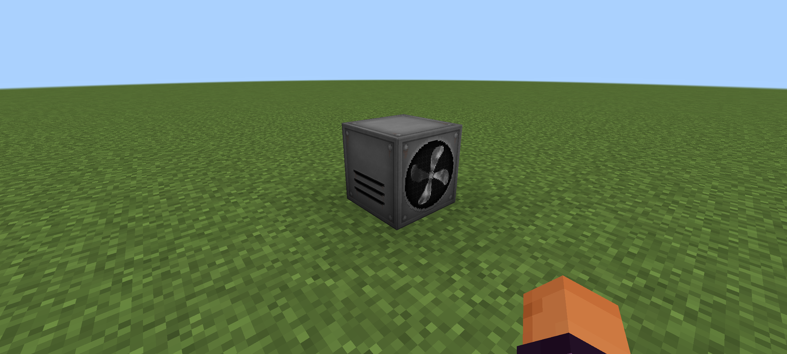

Mob Grinding Utils
Criado por: ReversyPlayer e McStudios


Sobre esse Addon
Este addon adiciona novas máquinas e itens incríveis para o seu modo sobrevivência: ventiladores, esteiras, espinhos e muito mais!
📦 Conteúdos do Addon
1️⃣ Ventilador
Colocável virado para qualquer direção. Quando alimentado por redstone, ele empurra itens, mobs e jogadores a até 4 blocos de distância.
2️⃣ Esteira
Quando uma entidade está em cima, ela é levada automaticamente na direção para qual o bloco foi posicionado.
3️⃣ Inibidor de Ender
Quando alimentado por redstone, impede que endermans, shulkers e jogadores se teletransportem num raio de 16 blocos. Com isso, pérolas de ender e frutas do coro não funcionam nessa área.
4️⃣ Tanque de XP
Sempre que você estiver com experiência e em cima do bloco, poderá armazenar seu XP dentro dele — muito útil para criar o Balde de Experiência.
5️⃣ Espinhos
Podem ser colocados de lado ou para cima. Quando um mob ou jogador encostar, receberá dano direto — perfeito para uso em fazendas.
6️⃣ Troca de Mobs & Ração de Galinha
É um item que serve para coletar o DNA de mobs e gerar ovos de desova deles!
🔹 Como usar:
- Primeiro, crie uma Ração de Galinha e segure-a na mão secundária
- Bata no mob com o item Troca de Mobs
- O DNA do mob ficará armazenado na ração
- Agora bata numa galinha com a ração — ela soltará o ovo de desova daquele mob!
🥚 Ovo Podre e Ovo Dourado
Ao criar uma Ração Amaldiçoada ou Ração Nutritiva e bater numa galinha, você ganha esses ovos especiais:
- Ovo Dourado: Transforma grama numa área de 5×5 em grama verde, que gera mobs pacíficos
- Ovo Podre: Transforma grama numa área de 5×5 em grama roxa, que gera mobs hostis
A quantidade e o tipo de mob dependem da dimensão: por exemplo, endermans aparecem com mais frequência no Fim, mas são mais raros no Mundo Superior.
⚠️ Observação Importante
Nesta versão, as máquinas param de funcionar se você ficar muito longe delas. Esse comportamento será corrigido em versões futuras!
Por enquanto é só! Em breve teremos mais novidades e funcionalidades.
Informações
- 📅 Lançado: 15/07
- 🎮 Versão compatível: 1.26.32
- 📂 Tipo: Adaptação não oficial